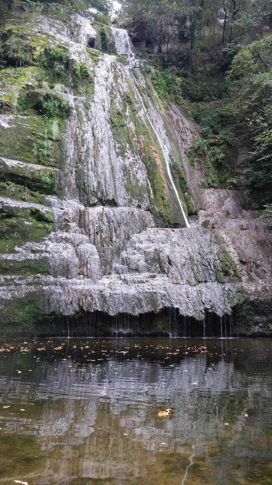
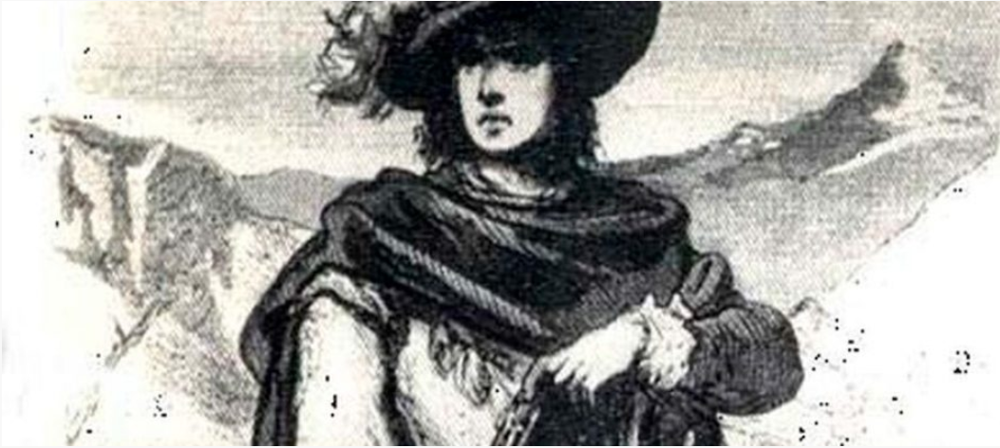

Contexto y Origen Las vaguerías se establecieron en respuesta a la necesidad de mejorar la gestión fiscal y militar en Cataluña, especialmente bajo el reinado de Jaime I (siglo XIII) y sus sucesores. El término proviene del latín "vagatio", que hacía referencia a la inspección o control de una zona determinada.
Funciones y Organización Administración Fiscal: Se crearon para facilitar la recaudación de tributos, como el bovatge (impuesto sobre la propiedad ganadera) o el monedatge (impuesto para la acuñación de moneda). Control Judicial y Militar: Servían como áreas de supervisión de los oficiales reales encargados de hacer cumplir la ley y organizar las levas militares en caso de conflicto. División Geográfica: Cataluña se dividió en varias vaguerías, que agrupaban diferentes veguerías (entidades territoriales más pequeñas que estaban a cargo de un veguer).
Declive Con el tiempo, las vaguerías perdieron relevancia debido a la consolidación de la estructura administrativa basada en las veguerías. Finalmente, con las reformas centralizadoras de los siglos XVI y XVII, desaparecieron como entidades funcionales.
En la imagen siguiente, la linia roja refleja "El cami Ral" tal y como era hacia el S.XVII.
Esta via dividida en diferentes tramos, unia todo el territorio desde Madrid hasta Francia, a traves de Tarragona y Girona o desde Aragón pasando por Lleida. En aquel entonces los caminos reales eran vias principales que permitian un control economico y administrativo sober el territorio, funcionando a la par como vias logisticas, dada esta importancia en esos tramos donde no alcanzaba la via como podian ser senderos montañosos, existián diferentes cruces que conectaban estas vias secundarias con el camino real
En la imagen siguiente, el paisaje desde un camino para excursionistas que pasa por algunos de los lugares frecuentados por Joan Sala i Ferrer o más conocido como Joan de Serrallonga. Este tramo se de puede encontrar en la caminata conocida como: La Ruta de Serrallonga, situada en la actual provincia de Tarragon, una pequeña caminata de 55 km, con una pendiente no muy pronunciada:
La Ruta de los Bandoleros:
La ruta de los bandoleros es una excursión por el Camí Ral de Coll de Daví, en el Parc Natural de Sant Llorenç del Munt i l’Obac, una de las principales arterias que unía Barcelona y Manresa en la época medieval.
Los cuentos hablan de la Ruta dels Bandolers y del más temido bandolero catalán del momento, el Bandoler Capablanca.
La leyenda cuenta que sólo tenía que extender su capa en el suelo para que sus víctimas depositaran todo su dinero y joyas. Un trekking original con actores caracterizados de la época medieval, quienes durante la excursión describen con repentinas interpretaciones cómo se vivía antaño el camino, haciendo especial hincapié en la importancia histórica de la ruta: peligrosos bandoleros, brujas acudiendo a un aquelarre, peregrinos intentando localizar el camino de Santiago, incluso una heroína que a capa y espada salva al grupo de un temible villano.
La ruta de la mina de los bandoleros:
Esta muy pequeña ruta de solo 7 km se situa al sur de Olot, en la Garrotxa, en ella se atraviesan preciosos bosques de encinas y hayas, la Mina del Bandolers es una grieta de 50 metros en la roca que sirvió de refugio para bandoleros.
A pesar de ser un problema para cualquiera que entrara en su zonas de habitallamiento, muchos de ellos solian ser ocultos por aldeanos de pueblos que tuvieran simpatia por la causa del bandolero, llegando incluso a acojerlos a cambio de cobrarles una manutención.
A diferencia de loq ue se cree ya en 1600 el bandolerismo empieza a lejarse cada vez de las zonas rurales, debido a que la riqueza se encuentra en las grandes urbes. Uno de sus medios más conocido es el corte de caminos mediante el derribo de arboles o dejando objetos de grandes tamaños que forzasen a detenerse en medio del camino
Durante el barroco, se destacan 3 grandes lidered: Perot Rocaguinarda Los Hermanos Margarit y Joan Sala y Ferrer,
Joan de Serrallongo: Nacido el 23 de abril de 1594 y ejecutado el 8 de enero de 1634, fue, junto a su hermano Antoni, uno de los pocos supervivientes de su infancia. Al quedar a cargo de su mujer y con apenas ingresos, optó por el bandolerismo. Serrallonga luchó en el bando Nyerro durante la guerra entre los Nyerros (partidarios del mundo rural y la nobleza) y los Cadells (partidarios de las grandes urbes y el totalitarismo monárquico). Pocos años antes de su muerte, esta guerra cesó, y junto a otros grupos de bandoleros enfocó sus últimas actividades contra la monarquía hispánica. Fue el bandolero más famoso de su tiempo debido a su cruel ejecución y a las numerosas historias de caballería que se escribieron con él como protagonista. Las actas de su juicio son las únicas de un proceso por bandolerismo que se conservan en perfecto estado. Con su muerte, concluyó una de las diferentes etapas oscuras de la historia de Cataluña. Se le atribuye, aunque sin pruebas contrastadas, el grito: "Visca la terra, mori lo mal govern."
Los Hermanos Margarit: Sobre ellos hay poca información en internet. Se sabe que su carrera terminó en 1627, cuando se unieron a Serrallonga para enfrentarse al comisario Pere Antic en Vilanova de Sau. Tras la muerte de los hermanos Margarit, el virrey escribió una carta en la que afirmaba que el único bandolero del que aún habría que preocuparse era Serrallonga.
Perot Rocaguinarda: Aunque no fue el más famoso, sí fue quizás el bandolero más importante de su época. Se dice que fue amigo del mismísimo Cervantes y el único bandolero conocido que consiguió un indulto. Murió como capitán de los Tercios de Nápoles. Perot combatió en el bando Nyerro, y su acción más destacada fue el intento de asesinato del arzobispo de Vic junto a un grupo que llegó a contar con 400 bandoleros.
Mientras que de bestimenta llevaban una ropa muy simple: Sombrero de copa, capa y botas, con bestimentos normalmente de lino. Para cometer sus asaltos, los bandoleros usaron un arsenal amplio, entre sus armas más comunes estaban: El pedreñal corto y largo, la espada y el puñalete
El pedreñal, o pistola de cañón largo, era el arma de fuego predilecta debido a su portabilidad y escaso peso. Aunque su alcance era extremadamente corto, esto variaba según el tipo de arma. Su principal ventaja era su rapidez de uso en comparación con los mosquetes o arcabuces empleados por los Tercios.
Esta arma demostró su utilidad cuando, tras la muerte de Perot Rocaguinarda, 300 soldados de los Tercios murieron en lo que se conoció como el Asalto al Tren de Glasgow Catalán.